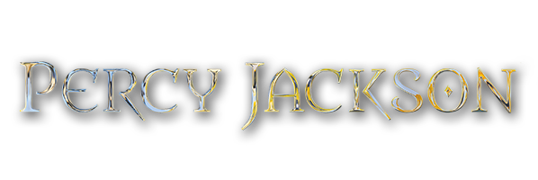

"Non ho scelto io di essere un mezzosangue.
Se state leggendo questo sito perché pensate di poterlo essere anche voi, vi do un consiglio: chiudetelo all'istante.
Essere dei mezzosangue è pericoloso. E' terrificante. Nella maggior parte dei casi, si finisce ammazzati in
modi orribili e dolorosi. Se invece siete dei ragazzi normali e pensate che questo sia un sito normale, perfetto.
Continuate a leggere. Ma se vi riconoscete in queste righe - se vi smuovono qualcosa dentro - smettete subito.
Potreste essere dei nostri. E quando lo avrete capito, sarà solo questione di tempo perché se ne accorgano anche
loro e vengano a cercarvi. Non dite che non vi avevo avvertito :)"
CHI E'?

Percy Jackson, figlio di Poseidone, dio del mare, è un semidio che vive tra il mondo degli dei dell'Olimpo e quello degli esseri umani. La sua vita è pervasa da creature mitologiche, influenze divine e battaglie tra il bene e il male. La sua avventura inizia quando scopre la sua vera identità, catapultandolo in un mondo di pericoli, misteri e magia. Affronta incredibili sfide, navigando tra mostri, divinità gelose e oscuri complotti. Lungo il suo viaggio, impara il significato dell'amicizia, del coraggio e dell'accettazione di sé mentre cerca di trovare il suo posto nel mondo e difendere ciò in cui crede.
SAGHE PRINCIPALI
Percy Jackson e gli dei dell'Olimpo 1. Il ladro di fulmini 2. Il mare dei mostri 3. La maledizione del Titano 4. La battaglia del labirinto 5. Lo scontro finale Percy Jackson e gli eroi dell'Olimpo 1. L'Eroe Perduto 2. Il figlio di Nettuno 3. Il marchio di Atena 4. La casa di Ade 5. Il Sangue dell'Olimpo |


|
|---|
© The world of Percy Jackson - Tutti i diritti riservati